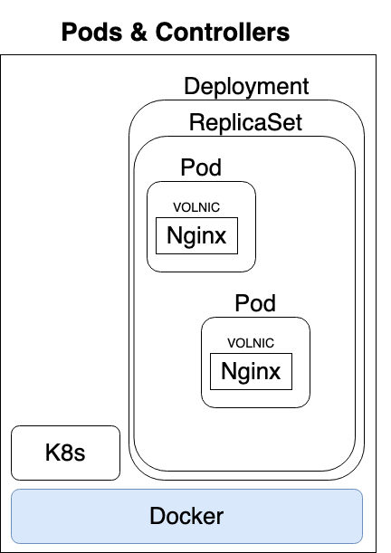

Kubernetes Install
Architecture Terminology
Kubernetes: the whole orchestration system
K8s “k-eights” or Kube for short
Kubectl: CLI to configure Kubernetes and manage apps
Using “cube control” official pronunciation
Node: Single server in the Kubernetes cluster
Kubelet: Kubernetes agent running on nodes
Control Plane: Set of containers that manage the cluster
Includes API server, scheduler, controller manager, etcd, and more
Sometimes called the master
Installing Kubernetes
Kubernetes is a series of containers, CLIs and configurations
Many ways to install
Docker Desktop: Enable in settings
Sets up everything inside Docker’s existing Linux VM
Docker Toolbox on Windows: MiniKube
Uses VirtualBox to make Linux VM
Your Own Linux Host or VM: MicroK8s
Installs Kubernetes right on the OS
Kubernetes in a browser
Try http://play-with-k8s.com or katacoda.com in a browser
Container Abstractions
Pod: one or more containers running together on one Node
Basic unit of deployment. Containers are always in pods
Controller: For creating/updating pods and other objects
Many types of Controllers inc. Deployment, ReplicaSet, StatefulSet, DaemonSet, Job, CronJob, etc.
Service: network endpoint to connect to a pod
Namespace: Filtered group of objects in cluster
Secrets, ConfigMaps, and more
Kubectl Command Styles
Kubernets is evolving, and so is the CLI
We get three ways to create pods from the kubectl CLI
kubectl run (changing to be only for pod creation)
kubectl create (create some resources via CLI or YAML)
kubectl apply (create/update anything via YAML)
Our First Pod
Creating Pods with kubectl
Are we working?
kubectl version
Two ways to deploy Pods (containers): via commands, or via YAML
Lets run a pod of the nginx web server!
kubectl run my-nginx –image nginx
Lets list the pod
kubectl get pods
Lets see all objects
kubectl get all
Pods -> ReplicaSet -> Deployment
Cleanup
Delete deployment
kubectl delete deployment my-nginx
Scaling ReplicaSets
Start a new deployment for one replica/pod
kubectl run my-apache –image httpd
Lets scale it up with another pod
kubectl scale deploy/my-apache –replicas 2
kubectl scale deployment my-apace –replicas 2
Same command
deploy = deployment = deployments
Inspecting Deployments
kubectl get pods
Get container logs
kubectl logs deploy my-apache –follow –tail 1
Get a bunch of details about an object including events!
kubectl logs -l run=my-apache
kubectl describe pod/my-apache-xxxxxx-yyyyy
Watch a command (without needing watch)
kubectl get pods -w
In a seperate window
kubectl delete pod/my-apache-xxx-yyy
Watch the pod get re-created